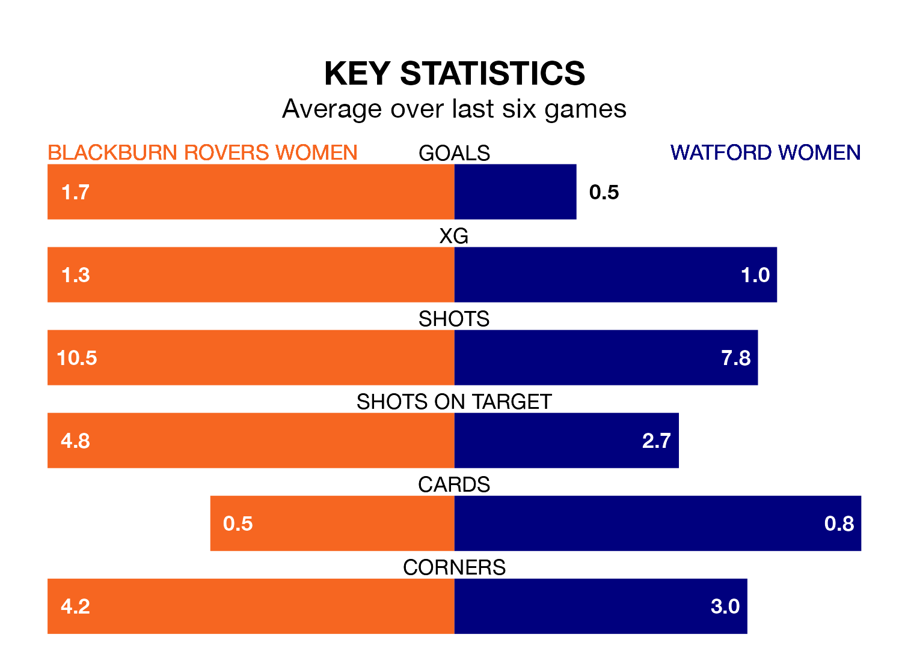

Watford Women make the journey to the Lancashire FA County Ground to play Blackburn Rovers Women on early Saturday looking to pick up points to end their five-game losing streak.
Watford's struggles have left them with just three points from their last six FA Women's Championship matches, while their opponents have earned 12 from a possible 18.
Watford are bottom of the table after 20 games, of which they have won three and drawn three, earning 12 points.
Blackburn Rovers are six places ahead of the away team in sixth, with nine wins and three draws putting them on 30 points.
With Alexandra Brooks between the sticks, the hosts can rely on one of the league's safest pair of hands. She has kept seven clean sheets in her 20 appearances this season in the FA Women's Championship.
In Watford's net, Safia Middleton-Patel has two clean sheets in four games.
With 19 goals in 20 games so far this season, Watford are the league's second-lowest scorers with 0.9 goals per game. And they are conceding more than average, letting in 41 goals at a rate of 2.0 per game.
Blackburn Rovers are also below average scorers, with 1.0 goal per game, compared to a league average of 1.4. They have conceded 1.4 goals per game.
In the last three years, Blackburn Rovers and Watford have played each other on three occasions. Blackburn Rovers won two of them and they drew once.
Their last meeting was on September 17, when Blackburn Rovers won 1-0 away.
Blackburn Rovers' last match was on Sunday, a 0-0 draw against Reading Women.
Watford lost 2-0 against Charlton Athletic Women last time out, also on Sunday.
Updated: 15:40 (UTC), 18/04/24